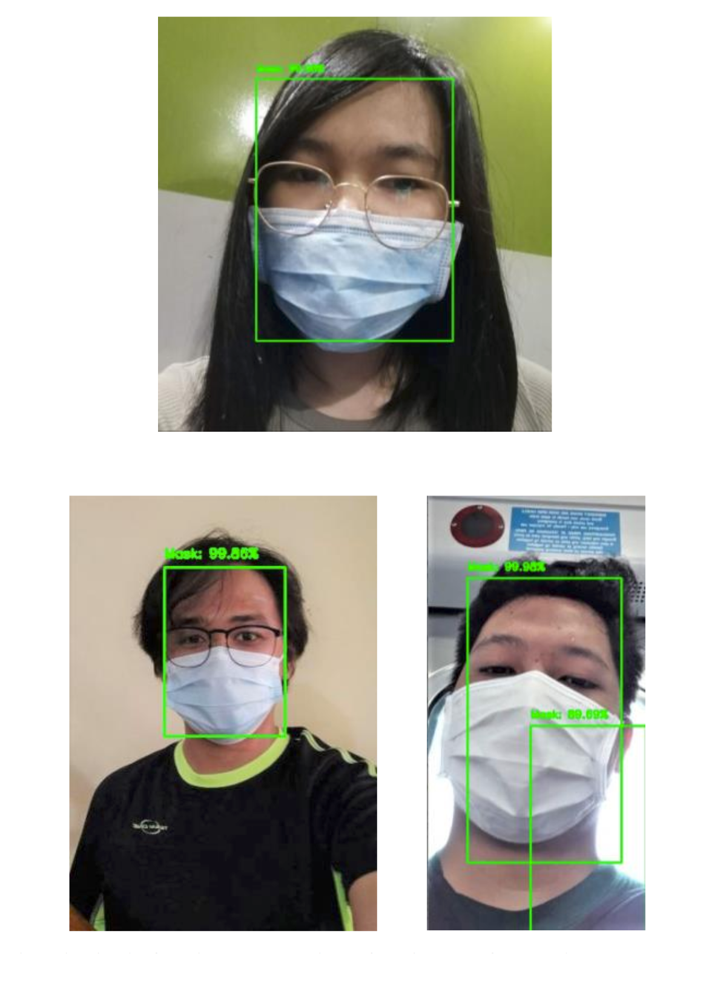
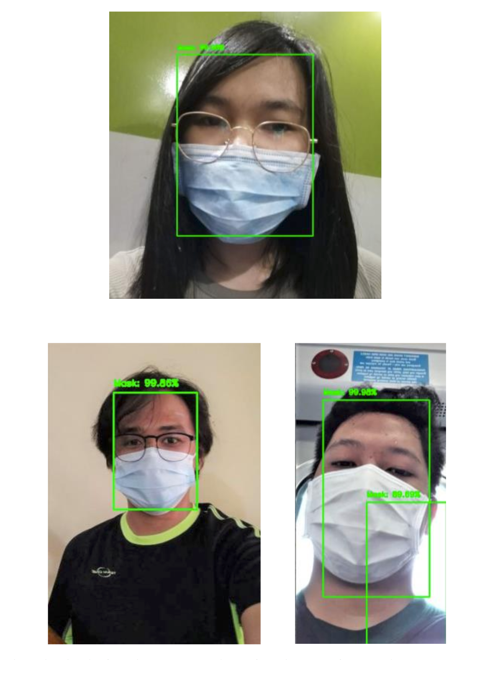

MOBILITY SOLUTIONS FOR COVID-19
OLAP PROJECT
The Optimal Locations and Allocations of Personnel (OLAP) is a project developed for the optimal allocation of healthcare and security personnel among checkpoints surrounding Metro Manila using advanced technologies.
- Automated monitoring for Social Distancing
- Face Mask Detection
 
